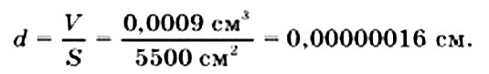

Содержание:
1. Молекулы 2. Броуновское движение 3. Диффузия 4. Агрегатные состояния вещества 5. Взаимное притяжение и отталкивание молекул
Человек издавна пытался объяснить необъяснимое, увидеть невидимое, услышать неслышимое. Оглядываясь вокруг себя, он размышлял о природе и пытался решить загадки, которые она перед ним ставила. Сначала человек считал природу одушевленной, но позже человек стал понимать, что движет всем вокруг закон. И только он стоит во главе всего, что нас окружает.
Вы, конечно же, ежедневно сталкиваетесь с различными физическими явлениями и в большинстве случаев можете предсказать как они закончатся. Например, предскажите, чем закончатся событие: если капнуть калю в стакан с водой, то... Вы предскажите это, основываясь на строении вещества.
Молекулы
Еще в древности люди высказывали предположения о том, что все вещества состоят из очень маленьких частичек. Однако лишь в восемнадцатом веке эти предположения сложились в более или менее стройную теорию. Представления о строении вещества помогли людям не только понять и объяснить те или иные физические явления, но и влиять на происхождение явлений, предсказывать поведение различных веществ при изменении внешних условий. Более того, люди научились сами получать вещества с заданными свойствами.
Некоторые явления можно легко предсказать, опираясь на свой повседневный опыт. Например, если сжать руками воздушный шарик, то он изменит свой объем и форму.
Cамые различные вещества состоят из частиц. Мельчайшие частицы вещества - М О Л Е К У Л Ы, состоящие из атомов
Диаметр одной молекулы можно получить, основываясь на опытах.

В качестве единицы длины молекулы используют ангстрем (обозначается А), равный 1010 м, или нанометр, равный 109 м.
Из-за очень малых размеров молекулы нельзя увидеть невооружённым глазом или в обычные микроскопы. Только при помощи электронного микроскопа удалось сфотографировать наиболее крупные из них.
Сами атомы также не являются неделимыми частицами. Современные технологии позволяют расщеплять атомы и создавать новые элементы.

В А Ж Н О:
1. Все вещества состоят из честиц - молекул.
2. Когда частицы тела отдаляются друг от друга, объём тела увеличивается. И наоборот, когда частицы тела сближаются друг с другом, объём тела уменьшается.
3. При нагревании тела расширяются, то есть, увеличивается их объём. При охлаждении, объем тела уменьшается
4. Молекулы можно увидеть с помощью электронного микроскопа.
5. Молекулы разных веществ отличаются друг от друга, но молекулы одинаковых веществ абсолютно одинаковы.
6. Молекулы не являются наиболее мелкими частицами. Они состоят из атомов.
7. Между молекулами есть промежутки
Броуновское движение
Молекулы – мельчайшие частицы вещества. Эти частицы настолько малы, что мы не в состоянии увидеть их невооруженным глазом, поэтому, все тела кажутся сплошными. Однако было доказано с помощью опытов, что тела состоят из малых частиц. Как оказалось, молекулы не стоят на месте, а постоянно находятся в беспорядочном движении. Возникает вопрос: как это частички вещества могут находиться в непрерывном движении, если, например, стол сохраняет свою форму, и никакого движения не происходит? Стакан, чайник, карандаш – да любое твердое тело сохраняет свою форму неизменной. Как же может быть, что молекулы внутри этих тел двигаются? Это подтверждается наблюдениями и опытами. Впервые такое предположение было высказано Робертом Броуном в 1827 г.
Как-то раз он разглядывал в капле воды под микроскопом споры растений. Внезапно Броун увидел, что мельчайшие твердые крупинки, которые едва можно было разглядеть в капле воды, непрерывно дрожат и передвигаются с места на место. Он установил, что эти движения, никак не связаны ни с потоками в жидкости, ни с ее постепенным испарением, а присущи самим частичкам. Если проследить за одной частицей, то можно убедиться, что её движение совершенно хаотично и её траекторию невозможно предугадать. Частицы, двигающиеся таким образом, стали называть броуновскими, да и само движение было названо Б Р О У Н О В С К И М.
Диффузия
Взаимное проникновение частиц одного вещества в другое, обусловленное движением молекул, называют Д И Ф Ф У З И Е Й (от латинского «диффузио» — «распространение», «растекание»).
Мы ощущаем запах духов на некотором расстоянии от флакона. Это объясняется тем, что молекулы духов, так же как и молекулы воздуха, движутся. Между молекулами существуют промежутки. Молекулы духов проникают в промежутки между молекулами воздуха, а молекулы воздуха — в промежутки между молекулами духов.
Опыты показывают, что диффузии в газах — самый быстрый процесс, в жидкостях он протекает гораздо медленнее, но может наблюдаться даже в твердых телах. Соединив гладко отполированными поверхностями два бруска из разных металлов, например из меди и алюминия, и оставив их в таком положении на длительное время (на 4—5 лет), мы обнаружим их сращивание за счет проникновения атомов меди в алюминиевый образец и, наоборот, проникновения атомов алюминия в медный
Агрегатные состояния вещества
Все окружающие нас тела отличаются друг от друга не только своим внешним видом, объёмом и цветом, но и составом.
Тела состоят из веществ. У веществ имеются различные свойства.
Вещества в природе встречаются в трёх состояниях:
- твёрдом;
- жидком;
- газообразном.
Эти состояния назвали А Г Р Е Г А Т Н Ы М И С О С Т О Я Н И Я М И В Е Щ Е С Т В А.
Если воду нагреть до температуры 100 0С, то она переходит в газообразное состояние, так называемый пар. Этот пар представляет собой скопление мельчайших водяных капелек. Облака – это миллиарды мельчайших капелек воды.
Большинство г а з о о б р а з н ы х веществ бесцветны, поэтому увидеть их невозможно. Находясь в сосуде, они принимают его форму. Объём газов зависит от температуры и давления, поэтому газы сжимаемы. Это свойство широко используется. Например, с помощью сжатого воздуха закрываются и открываются двери в автобусе, поток раскалённых газов реактивного двигателя поднимает ввысь самолёты, купол парашюта, наполненный упругим воздухом, позволяет плавно опуститься на землю.
Несомненно, переливать ж и д к о с т и более привычно и наглядно. Если жидкость налить в сосуд, то она примет форму того сосуда, в который её налили. Это отражает такое свойство жидкости, как текучесть. Одни жидкости достаточно быстро растекаются по плоской поверхности, например, вода, спирт, бензин, ацетон. Другие жидкости – очень медленно. Так, капля мёда на стекле будет растекаться очень медленно, для того, чтобы это сделать, нужно стекло поставить вертикально. Жидкости, в отличие от газов, практически не сжимаются. Если хлопнуть по поверхности воды, то эффект будет таким же, как, если хлопнуть по крышке стола.
Если жидкость охладить, то она переходит в твёрдое агрегатное состояние. Т в ё р д ы е тела сохраняют свои объём и форму, они практически не сжимаются. Так, кубики льда постоянно буду иметь свои форму и объём, куда бы мы их не перемещали, пока они не растают.
Диффузию, броуновское движение, переход веществ из одного агрегатного состояния в другое относят к физическим явлениям, так как не происходит превращения одних веществ в другие.
Таким образом, физические явления – это явления, при которых изменяются агрегатные состояния веществ, форма и размеры тел, построенных из этого вещества, но сохраняется их химический состав.
Взаимное притяжение и отталкивание молекул
Между мельчайшими частицами вещества есть промежутки. Возникает вопрос: каким же образом тогда твердые тела сохраняют форму и объем? Почему ни твердые тела, ни жидкости просто не распадаются на мелкие частицы? Дело в том, что между молекулами существует взаимное притяжение. Соседние молекулы притягиваются друг к другу. Конечно, такое притяжение между двумя молекулами очень слабое и его едва ли можно измерить. Однако, известно, что количество молекул в теле может быть просто огромно. Поэтому, когда речь идет о притяжении миллионов и миллиардов молекул, такое притяжение вполне ощутимо. Обратимся к бытовому опыту: можно легко порвать бумагу. Чтобы сломать карандаш, нужно приложить уже более существенное усилие
Но и в том, и в другом случае, усилия идут на преодоление притяжения между молекулами. Но притяжение между молекулами в разных веществах различно. Именно поэтому, одни тела значительно прочнее других. Например, чтобы сломать металлическую ложку нужно приложить значительно большую силу, чем для того, чтобы сломать карандаш.
Необходимо отметить, что взаимное притяжение молекул проявляется только тогда, когда они находятся на расстоянии, сравнимом с их размером. То есть, если между двумя молекулами можно втиснуть только одну молекулу, то между ними будет наблюдаться взаимное притяжение.
Если же расстояние между ними увеличить, то притяжение очень быстро ослабевает.
Можно заметить следующее: если молекулы, оказавшись на достаточно близком расстоянии, начинают притягиваться, то почему тогда все молекулы в теле не слипаются? Ведь между молекулами существуют промежутки. Дело в том, что когда молекулы оказываются слишком близко, между ними возникает взаимное отталкивание. Этим объясняется сопротивление, которое чувствуется при сжатии тел. Более того, некоторые тела после того, как их сжали, распрямляются. Это происходит потому, что при сжатии молекулы сближаются на расстояния, меньше, чем размеры самих молекул, и возникает взаимное отталкивание. Итак, на расстояниях, сравнимых с размерами молекул заметнее проявляется взаимное притяжение, а на более близких расстояниях – взаимное отталкивание.